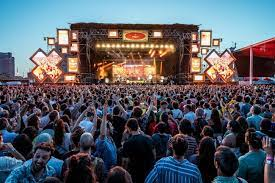
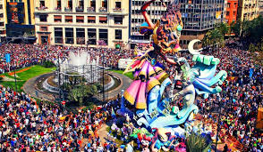

Music Festivals Spain is known for being one of the countries with the largest number of music festivals. Some of the most popular are Primavera Sound in Barcelona, the Benicàssim International Festival (FIB), Aquasella in Asturias, Monegros in Huesca, Mad Cool in Madrid, BBK Live in Bilbao, O Son Do Camiño in Galicia, among much others. These festivals usually have a wide musical offering, including genres such as rock, pop, electronica, indie, flamenco, Latin music, among others.
Concerts in halls and venues: It is also very common to find concerts by national and international artists in concert halls and large capacity venues in cities such as Madrid, Barcelona, Valencia, Bilbao, Seville, among others. These concerts cover a wide variety of genres, from classical music to urban music.
.jpg)
Verbenas and popular partys In many towns in Spain, street parties and popular festivals are held in which music plays a fundamental role. These festivals usually include performances by orchestras, traditional music groups, marching bands, among others. An example of this type of festival is the April Fair in Seville, the San Fermín festival in Pamplona or the Fallas in Valencia..
Opera and classical music: Spain has important opera and concert theaters that offer a wide program throughout the year. The Gran Teattro del Linceu in Barcelona, the Teatro Real in Madrid, the Palau de les Arts Reina Sofía in Valencia, are some examples of emblematic places to enjoy opera and classical music.
.jpg)